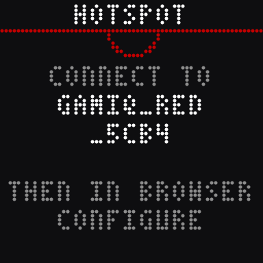
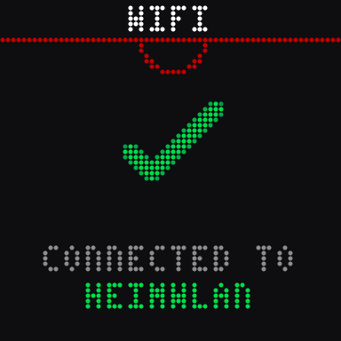
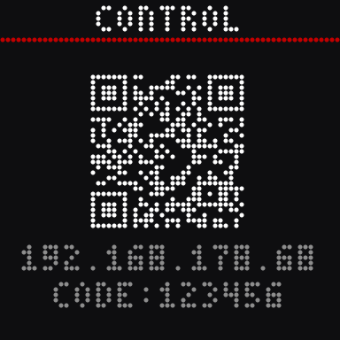
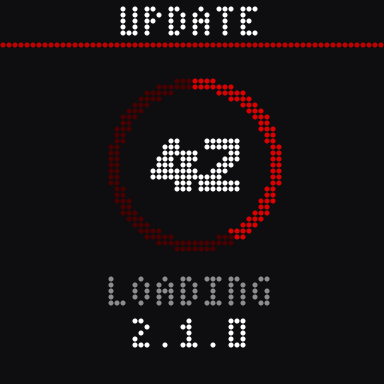
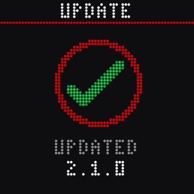
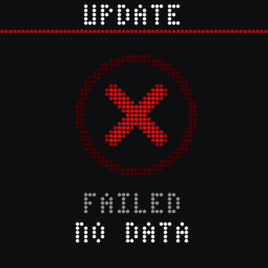
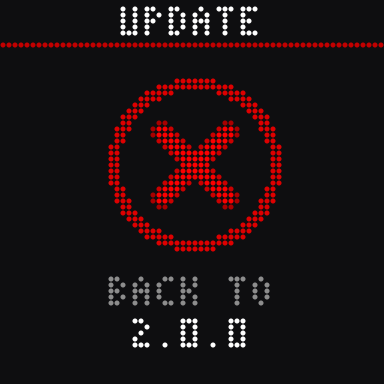
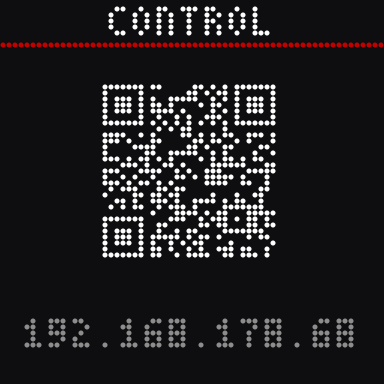

GAMiq
GAMiq guide
What you need
- One or more GAMiq units (up to five per game), each with power (USB or the integrated supply).
- A 2.4 GHz WiFi network that the units and your phone can join. A phone hotspot works too.
- A phone or tablet with a browser. No app is needed.
First start (once per unit)



Every start

An update




When something does not work
Connection lostIf the page says “Connection lost” or the time stands still, the phone cannot reach the system. Check that the phone is on the same WiFi as the units. The game on the panels goes on.
A unit loses powerThe game goes on on the other unit, which becomes the Master after about 23 seconds. A paused game is kept, but its QR code covers it until a phone is connected: scan it once, the code belongs to that unit.
A unit shows its own QR code after an updateIt runs another MAJOR version and no longer joins the others. Update the other units too, one by one, in their settings.

SoundThe units have no speaker, the signal comes from the phone. Pair a Bluetooth speaker with it, unmute it and tap once on the page after loading. Keep the page in front and set the screen timeout before a game to the longest value or off: a locked phone stays silent.
The QR code does not scanThe LED spacing makes it hard for some cameras at close range. Hold the phone one to three metres away, or type the address shown below the code and enter the code.
Who can operateAnyone on the same WiFi can watch, only paired phones can operate. Pairing keeps bystanders from pressing buttons; it is no protection against someone who can read the network traffic: use a network you trust or a hotspot of your own.